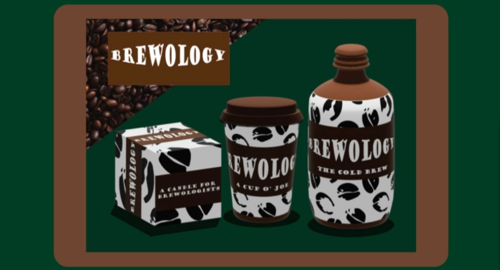

BREWOLOGY

This project was to create a 3D product mockup for a fictional brand. It had to be a 3D object, map art on to it and create a mock up which included a reflection of the object as though it is placed on a reflective surface.
3D Mockup
I decided on making the mockup of a coffee brand which was named as Brewology. It consisted of a coffee tumbler, a packaging of the coffee box and a coffee jug. The colour pallete was green, brown and white as it was about coffee.There was the use of extrude and bevel, symbols, text warping, pen tool, 3D and materials, scale guides, colour and image trace.